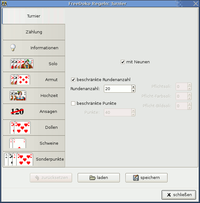

FreeDoko
Dieser Artikel wurde für die folgenden Ubuntu-Versionen getestet:
Ubuntu 16.04 Xenial Xerus
Ubuntu 14.04 Trusty Tahr
Zum Verständnis dieses Artikels sind folgende Seiten hilfreich:
FreeDoko  ist ein freies Doppelkopfspiel für Linux und Windows. Es unterstützt alle gängigen Spielregeln, egal ob "mit Neuner" oder "ohne", und bringt Computergegner für jede Spielstärke mit. Der Mehrspielermodus ist zur Zeit nur eingeschränkt möglich und für Testzwecke gedacht. Eine vollständige Implementierung ist für Version 0.8 vorgesehen. Bis dahin kann man sich jedoch problemlos die Zeit mit den Computergegnern vertreiben.
ist ein freies Doppelkopfspiel für Linux und Windows. Es unterstützt alle gängigen Spielregeln, egal ob "mit Neuner" oder "ohne", und bringt Computergegner für jede Spielstärke mit. Der Mehrspielermodus ist zur Zeit nur eingeschränkt möglich und für Testzwecke gedacht. Eine vollständige Implementierung ist für Version 0.8 vorgesehen. Bis dahin kann man sich jedoch problemlos die Zeit mit den Computergegnern vertreiben.

Installation¶
Das Programm ist nicht in den offiziellen Paketquellen enthalten. Daher muss man es manuell installieren oder das Programm selbst aus dem Quelltext erstellen: Spiele/FreeDoko kompilieren, unter Ubuntu 16.04 funktioniert z.Z. (01.05.2017) nur diese Methode!
Manuell¶
Hinweis!
Fremdsoftware kann das System gefährden.
Anmerkung: Diese Installationsvariante ist nur für 64-bit-Systeme geeignet.
Man kann ein .tgz-Archiv für Linux von der Downloadseite 
 herunterladen und entpacken [3]. Danach wird das Spiel im Ordner, in dem FreeDoko entpackt wurde, über die Datei FreeDoko gestartet. Bei Bedarf kann man einen Eintrag im Menü anlegen [4].
herunterladen und entpacken [3]. Danach wird das Spiel im Ordner, in dem FreeDoko entpackt wurde, über die Datei FreeDoko gestartet. Bei Bedarf kann man einen Eintrag im Menü anlegen [4].
Unter Ubuntu 14.04 wurde berichtet, dass ggf. noch Bibliotheken installiert werden müssen:
libalut0 (universe)
libgnet2.0-0 (universe)
libgtkmm-2.4-1c2a (universe)
 mit apturl
mit apturl
Paketliste zum Kopieren:
sudo apt-get install libalut0 libgnet2.0-0 libgtkmm-2.4-1c2a
sudo aptitude install libalut0 libgnet2.0-0 libgtkmm-2.4-1c2a
Unter Ubuntu 16.04 liefert ein Aufruf des Programms (Version 0.7.15/16) aus dem Archive im Terminal eine Fehlermeldung in der Art
FreeDoko: symbol lookup error: ./FreeDoko: undefined symbol: _ZN3Gdk6Pixbuf16create_from_fileERKSs
siehe auch Supportanfrage auf der Sourgeforge-Seite des Projektes; eine Lösung ist bisher nicht bekannt.
Benutzung¶
|  |
| Regeln |
Nach erfolgreicher Installation lässt sich das Spiel bei Ubuntu-Varianten mit einem Anwendungsmenü über "Spiele -> Kartenspiele -> FreeDoko" starten [5]. Die Benutzung und Konfiguration des Programms ist denkbar einfach. Alle Einstellungen geschehen per Mausklick und einer entsprechenden Oberfläche über den Menüeintrag "Einstellungen -> Einstellungen". Einzig zu beachten ist, dass die Spielregeln nur vor einem Turnier verändert werden können.
Kartensätze und Hintergründe¶
FreeDoko liefert bereits einige Spielhintergründe und Kartensätze bei der Installation mit aus. Wurde FreeDoko dagegen manuell installiert, können über die Projektseite weitere freie Kartensätze und Hintergründe bezogen werden, die man zum Spiel hinzufügen kann. Nachdem man die gewünschte Datei herunter geladen und entpackt [3] hat, müssen die Dateien in den passenden Ordner im Homeverzeichnis (~/.Freedoko/cardsets bzw. ~/.FreeDoko/backgrounds) verschoben werden. Eventuell ist dieses Verzeichnis noch nicht vorhanden und muss zuvor manuell erstellt werden.
Nachdem die neuen Kartensätze und Hintergründe in die entsprechenden Ordner verschoben wurden, können diese über "Einstellungen -> Einstellungen -> Erscheinungsbild -> Thema" aktiviert werden.
Problembehebung¶
Rundenangabe fehlerhaft¶
Die Einstellung der Runden in den "Turniereinstellungen -> Dauer" war - zumindest unter 64-bit-Systemen - fehlerhaft, es wurde immer eine Runde weniger berechnet und gespielt als eingestellt. Wer also vier Runden spielen wollte, musste eine "5" angeben. Auch die Anzeige der verbleibenden Spiele war nicht immer verlässlich.
FreeDoko startet nicht¶
Es kann passieren, dass sich das Spiel nicht starten lässt. Versucht man es über das Terminal, so erhält man folgende Fehlermeldung:
"freedoko: error while loading shared libraries: libopenal.so.0: cannot open shared object file: No such file or directory"
Problem dabei ist, dass die Datei libopenal.so.X.X.XXX (ein X steht für eine Ziffer der jeweiligen Versionsnummer) aktualisiert wurde und das Spiel selbige daher nicht mehr findet. Um dies zu beheben, schaut man nach, welche Version von OpenAL vorhanden ist:
ls -la /usr/lib/libopenal*
Das Ergebnis sieht dann in etwa so aus:
lrwxrwxrwx 1 root root 20 2009-08-02 15:17 /usr/lib/libopenal.so.1 -> libopenal.so.1.4.272
Dadurch erhält man die Versionsnummer (in diesem Beispiel 1.4.272). Im nächsten Schritt verlinkt man nun diese Datei neu:
sudo ln -s /usr/lib/libopenal.so.1.4.272 /usr/lib/libopenal.so.0
Zur Verdeutlichung kann auch dieser Beitrag hilfreich sein, in dem beschrieben steht, wie man vorzugehen hat.
- Erstellt mit Inyoka
-
 2004 – 2017 ubuntuusers.de • Einige Rechte vorbehalten
2004 – 2017 ubuntuusers.de • Einige Rechte vorbehalten
Lizenz • Kontakt • Datenschutz • Impressum • Serverstatus -
Serverhousing gespendet von